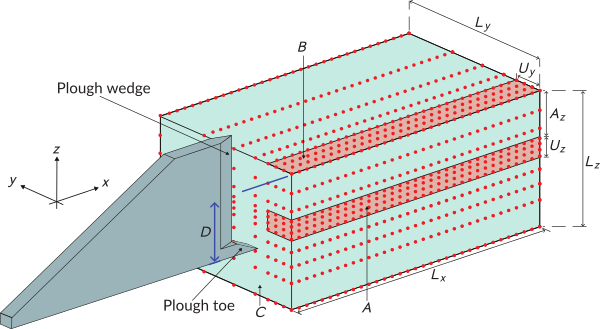
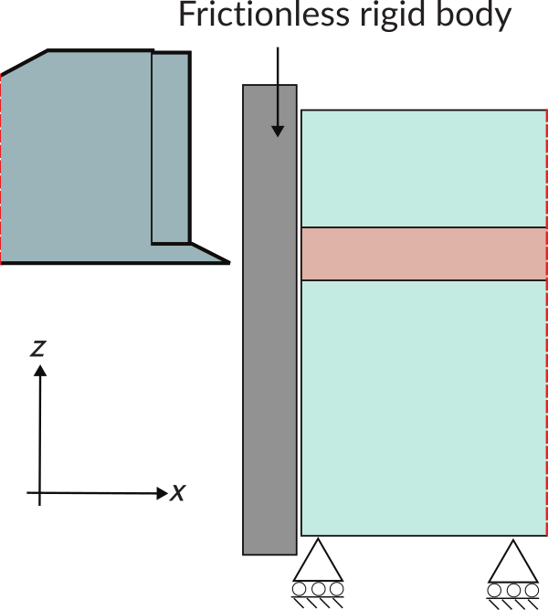
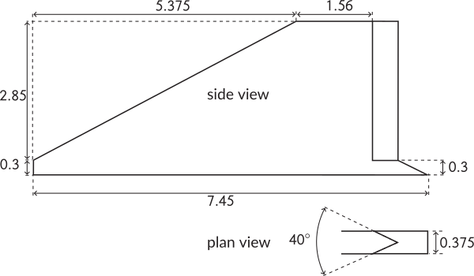
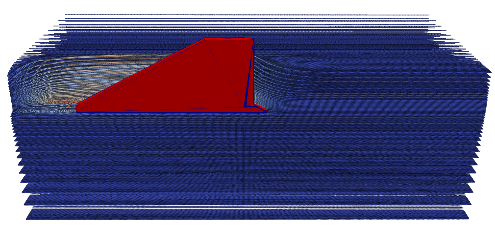
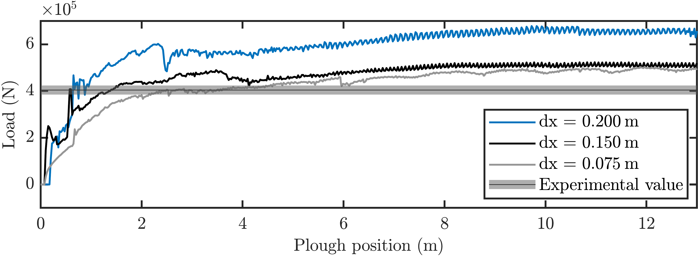

Tutorial 4: Plough (horizontal penetration)¶
Introduction¶
This tutorial walks through a 3D simulation of a seabed cable plough being dragged horizontally through dry sand, the most geometrically complex problem in the AMPSSIE tutorial set.
The plough is held at a fixed embedment depth and pulled at constant speed; the steady-state horizontal pull (tow) force is compared against the 50g geotechnical centrifuge measurements of Robinson et al. 1, with scaling to the 1g full-scale problem following Robinson et al. 2. The problem exercises contact with a non-convex rigid body, large deformation around a moving wedge, and adaptive mesh refinement that follows the plough through the domain.
This tutorial has four sections:
Problem description¶
You will define the geometry, mesh, boundary conditions, material, rigid body and solver in the input file. All the inputs to the simulation are defined using the input_data.json file format.
Only half of the domain is modelled, exploiting the symmetry of the plough in \(x\). The plough is held at a fixed embedment depth of \(D = 1.85\) m and is dragged through the soil over a total horizontal travel of \(20\) m at a step size of \(0.025\) m.



Mesh: Half-symmetric domain dimensions \(L_x = 20\) m, \(L_y = 10\) m, \(L_z = 7.5\) m. As in Tutorial 3, adaptive octree refinement is driven by the rigid body position. The smallest element size near the plough surface is \(dx_{\min}\), and the surrounding "buffer" region uses elements of size \(2\, dx_{\min}\). For a quick first run set \(dx_{\min} = 0.2\) m; for a high-accuracy comparison against the experimental data drop to \(dx_{\min} = 0.075\) m. Try the values \(dx_{\min} \in \{0.075,\, 0.15,\, 0.2\}\) m to reproduce the validation envelope reported in 1.
Initial GIMP distribution: \(2\times2\times2\) material points within each element, filling the soil domain.
Boundary conditions: Roller boundaries on the symmetry plane and the remaining lateral faces, and on the base. The top face is left as a free surface (homogeneous Neumann). The face the plough exits through (marked C in Figure 1) carries a Signorini condition - material can move away from this face but not across it. Pragmatically, this is enforced by a secondary frictionless rigid plate.
Material: Hencky hyperelastic-perfectly plastic dry sand with a non-associated Drucker-Prager flow potential, calibrated to the Robinson 2019 centrifuge sand via the Brinkgreve correlations 3. Use the same parameters as Tutorial 3 and adjust the relative density to match your target. Per 1, the simulation runs at full scale with \(1g\) gravity (the \(50g\) centrifuge scaling collapses to identical \(1g\) behaviour when length and time are scaled equally 2).
Rigid body: The plough geometry includes a forward wedge, a main share and an angled mouldboard (see Figure 3). The side view of the Signorini boundary condition arrangement is shown in Figure 2. To prevent rigid-body penetration of GIMPs, all convex edges sharper than \(90^\circ\) are filleted to a radius equal to half the minimum GIMP side length (~10 fillet segments per \(90^\circ\)). Frictional contact uses the same penalty parameters as Tutorial 2: \(\epsilon_N = 50\,E_p A_p\) and \(\epsilon_T = 25\,E_p A_p\).
Loading: A two-stage pseudo-static solution:
- Stage 1 - gravity and initial embedment: Apply gravity and position the plough at its operating depth \(D = 1.85\) m.
- Stage 2 - horizontal drag: Pull the plough horizontally in \(+y\) at a fixed depth over \(20\) m total travel, in steps of \(0.025\) m. If a step fails to converge, halve the step size and restart that step.
Solver: Newton-Raphson, quasi-static. The plough is the most complex contact geometry in the tutorial set, so robust step-size control is important.
Input setup¶
The input file is a single JSON object - a human-readable, editable text file. The complete file for this problem can be found here.
This problem has eight top-level sections, broken out below alongside the Problem description.
Defaults (a face being free, a DOF being unconstrained, etc.) are not included in the file; only non-default settings are specified. See the input_data.json file format for the full list of defaults.
input_data.jsonMesh data¶
The half-symmetric domain, with octree refinement driven by the rigid body.
dx refined is the smallest element size, used on elements intersecting the plough surface. buffer multiplier sets the element size in the surrounding region as a multiple of dx refined.
Refinement type is rigid body adaptive so the mesh re-refines as the plough advances through the soil, matching the scheme used in Tutorial 3.
Initial GIMP distribution¶
The default \(2\times2\times2\) distribution per element, filling the soil domain.
Boundary conditions¶
Rollers everywhere except the top face (default free surface) and the exit face which uses Signorini contact.
Material¶
A single layer of hyperelastic-perfectly plastic sand, calibrated to the Robinson 2019 sand via the Brinkgreve correlations - use the same property block as Tutorial 3, adjusting the relative density to match the experimental sand.
Rigid body¶
The plough geometry is loaded from an external mesh file. Convex edges sharper than \(90^\circ\) are filleted to a radius equal to half the minimum GIMP side length.
Loading¶
The two stages: gravity plus initial embedment, then horizontal drag. The drag step size is reduced by half on a failed convergence.
"Loading": {
"stages": [
{
"name": "stage 1 - gravity and embedment",
"type": "gravity",
"g": [0.0, 0.0, -9.81],
"number of increments": 1
},
{
"name": "stage 2 - horizontal drag",
"type": "rigid body displacement",
"rigid body": "plough",
"displacement y": 20.0,
"step size": 0.025,
"step size reduction factor": 0.5
}
]
}
Solver¶
Newton-Raphson, quasi-static. The same solver is applied to both stages.
Deploying and running the problem¶
Viewing the results¶
The deformed soil state at \(10\) m plough travel, with the GIMPs coloured by \(x\)-displacement (red 3 m, blue 0 m), shows how material flows around the wedge and is pushed forward (see Figure 4):

Figure reproduced from 4.
After post-processing each run, plot the horizontal pull force as a function of plough position and overlay the centrifuge data of 1 for the three mesh refinements - see Figure 5:

Figure reproduced from 4.
The first \(7.45\) m of travel is the embedment phase, during which the force oscillates as different parts of the plough engage with the soil. Beyond that the force reaches a steady-state regime - this is the regime to compare against the experimental measurement. Refinement consistently moves the numerical result towards the experimental data; \(dx \in \{0.075,\, 0.15\}\) m give good agreement with no parameter tuning.
-
S. Robinson, M.J. Brown, H. Matsui, A. Brennan, C.E. Augarde, W.M. Coombs, and M. Cortis. A cone penetration test (CPT) approach to cable plough performance prediction based upon centrifuge model testing. Canadian Geotechnical Journal, 58(10):1466–1477, 2021. ↩↩↩↩
-
Scott Robinson, Michael John Brown, Hidetake Matsui, Andrew Brennan, Charles Augarde, Will Coombs, and Michael Cortis. Centrifuge testing to verify scaling of offshore pipeline ploughs. International Journal of Physical Modelling in Geotechnics, 19(6):305–317, 2019. ↩↩
-
R.B.J. Brinkgreve, E. Engin, and H.K. Engin. Validation of empirical formulas to derive model parameters for sands. In Numerical Methods in Geotechnical Engineering, pages 137–142. CRC Press, 2010. ↩
-
Robert E. Bird, Giuliano Pretti, William M. Coombs, Charles E. Augarde, Yaseen U. Sharif, Michael J. Brown, Gareth Carter, Catriona Macdonald, and Kirstin Johnson. A dynamic implicit 3D material point-to-rigid body contact approach for large deformation analysis. International Journal for Numerical Methods in Engineering, 2025. ↩↩